Sejarah Singkat
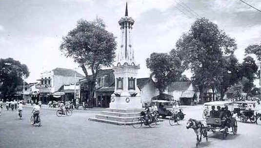
Berdirinya Kota Yogyakarta berawal dari adanya Perjanjian Gianti pada Tanggal 13 Februari 1755 yang ditandatangani Kompeni Belanda di bawah tanda tangan Gubernur Nicholas Hartingh atas nama Gubernur Jendral Jacob Mossel. Isi Perjanjian Gianti : Negara Mataram dibagi dua : Setengah masih menjadi Hak Kerajaan Surakarta, setengah lagi menjadi Hak Pangeran Mangkubumi. Dalam perjanjian itu pula Pengeran Mangkubumi diakui menjadi Raja atas setengah daerah Pedalaman Kerajaan Jawa dengan Gelar Sultan Hamengku Buwono Senopati Ing Alega Abdul Rachman Sayidin Panatagama Khalifatullah.
Setelah selesai Perjanjian Pembagian Daerah itu, Pengeran Mangkubumi yang bergelar Sultan Hamengku Buwono I segera menetapkan bahwa Daerah Mataram yang ada di dalam kekuasaannya itu diberi nama Ngayogyakarta Hadiningrat dan beribukota di Ngayogyakarta (Yogyakarta). Ketetapan ini diumumkan pada tanggal 13 Maret 1755.
Yogyakarta berarti Yogya yang kerta, Yogya yang makmur, sedangkan Ngayogyakarta Hadiningrat berarti Yogya yang makmur dan yang paling utama. Sumber lain mengatakan, nama Yogyakarta diambil dari nama (ibu) kota Sanskrit Ayodhya dalam epos Ramayana. Dalam penggunaannya sehari-hari, Yogyakarta lazim diucapkan Jogja (karta) atau Ngayogyakarta (bahasa Jawa).
Geografis
Batas Wilayah
Kota Yogyakarta berkedudukan sebagai ibukota provinsi DIY dan merupakan satu-satunya daerah tingkat II yang berstatus Kota di samping 4 daerah tingkat II lainnya yang berstatus Kabupaten.
Kota Yogyakarta terletak di tengah-tengah provinsi DIY, dengan batas-batas wilayah sebagai berikut:
- Sebelah utara : Kabupaten Sleman
- Sebelah timur : Kabupaten Bantul & Sleman
- Sebelah selatan : Kabupaten Bantul
- Sebelah barat : Kabupaten Bantul & Sleman
Wilayah Kota Yogyakarta terbentang antara 110° 24 I 19II sampai 110° 28I 53II Bujur Timur dan 7° 15I 24II sampai 7° 49I 26II Lintang Selatan dengan ketinggian rata-rata 114 m diatas permukaan laut.
Keadaan Alam
Secara garis besar Kota Yogyakarta merupakan dataran rendah dimana dari barat ke timur relatif datar dan dari utara ke selatan memiliki kemiringan ± 1 derajat, serta terdapat 3 (tiga) sungai yang melintas Kota Yogyakarta, yaitu :
- Sebelah timur adalah Sungai Gajah Wong
- Bagian tengah adalah Sungai Code
- Sebelah barat adalah Sungai Winongo
Luas Wilayah
Kota Yogyakarta memiliki luas wilayah tersempit dibandingkan dengan daerah tingkat II lainnya, yaitu 32,5 Km² yang berarti 1,025% dari luas wilayah provinsi DIY.
Dengan luas 3.250 hektar tersebut terbagi menjadi 14 Kecamatan, 45 Kelurahan, 617 RW, dan 2.531 RT, serta dihuni oleh 428.282 jiwa (sumber data dari SIAK per tanggal 28 Februari 2013) dengan kepadatan rata-rata 13.177 jiwa/Km².
Tipe Tanah
Kondisi tanah Kota Yogyakarta cukup subur dan memungkinkan ditanami berbagai tanaman pertanian maupun perdagangan, disebabkan oleh letaknya yang berada didataran lereng gunung Merapi (fluvia vulcanic foot plain) yang garis besarnya mengandung tanah regosol atau tanah vulkanis muda Sejalan dengan perkembangan Perkotaan dan Pemukiman yang pesat, lahan pertanian Kota setiap tahun mengalami penyusutan. Data tahun 1999 menunjukkan penyusutan 7,8% dari luas area Kota Yogyakarta (3.249,75) karena beralih fungsi, (lahan pekarangan)
Iklim
Tipe iklim "AM dan AW", curah hujan rata-rata 2.012 mm/thn dengan 119 hari hujan, suhu rata-rata 27,2°C dan kelembaban rata-rata 24,7%. Angin pada umumnya bertiup angin muson dan pada musim hujan bertiup angin barat daya dengan arah 220° bersifat basah dan mendatangkan hujan, pada musim kemarau bertiup angin muson tenggara yang agak kering dengan arah ± 90° - 140° dengan rata-rata kecepatan 5-16 knot/jam
Demografi
Pertambahan penduduk Kota dari tahun ke tahun cukup tinggi, pada akhir tahun 1999 jumlah penduduk Kota 490.433 jiwa dan sampai pada akhir Juni 2000 tercatat penduduk Kota Yogyakarta sebanyak 493.903 jiwa dengan tingkat kepadatan rata-rata 15.197/km². Angka harapan hidup penduduk Kota Yogyakarta menurut jenis kelamin, laki-laki usia 72,25 tahun dan perempuan usia 76,31 tahun.
Kebudayaan
Keraton Yogyakarta

Keraton Ngayogyakarta Hadiningrat adalah pusat budaya dan simbol kekuasaan kesultanan Yogyakarta. Keraton ini tidak hanya menjadi tempat tinggal Sultan, tetapi juga pusat kegiatan budaya dan upacara tradisional. Wisatawan dapat mengunjungi keraton dan melihat berbagai koleksi seni, alat musik, serta mengikuti upacara adat.
Sekatenan
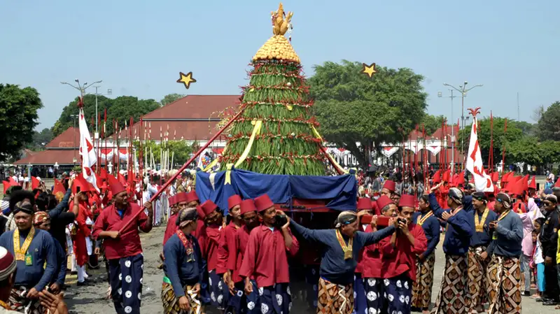
Sekatenan merupakan salah satu dari adat budaya Jogja yang sudah dilakukan selama bertahun-tahun. Mungkin sejak Islam masuk ke tanah Jawa karena Sekatenan adalah acara tahunan pesta rakyat yang dilakukan di Keraton Ngayogyakarta Hadiningrat untuk memperingati hari kelahiran Nabi Muhammad tanggal 5 Rabiul Awal Kalender Islam.
Wayang Golek Menak
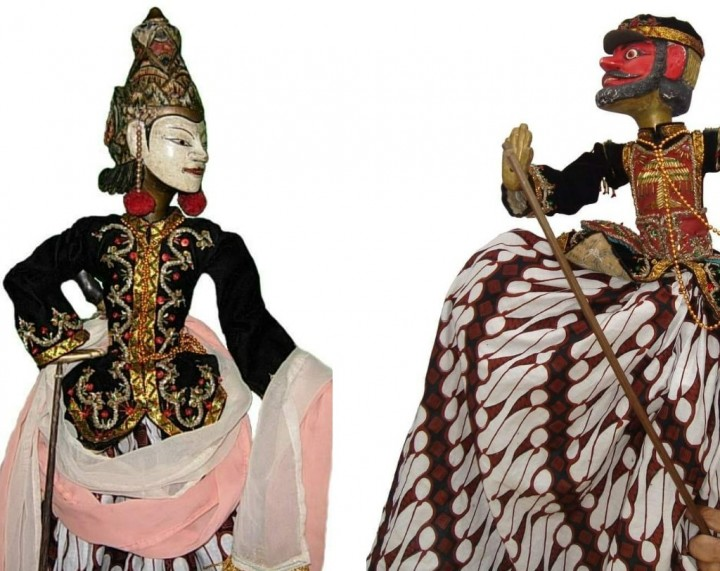
pertunjukan Wayang Golek yang menggunakan Serat Ménak sebagai sumber cerita. Serat Ménak merupakan karya sastra Persia Qisaa'I Emr Hamza, yang masuk ke Melayu sekitar tahun 1511. Karya sastra ini dikembangkan dalam bentuk prosa dengan judul Hikayat Amir Hamzah.
Wayang Golek Menak Yogyakarta terbuat dari bahan dasar kayu, yang terdiri dari bagian kepala, badan dan tangan. Busana yang dikenakan wayang ini terdiri dari baju untuk bagian atas dan kain (jarit) sebagai penutup bawahnya. Penggunaan bahan, hiasan dan motif kain disesuaikan dengan penokohan.
Batik Yogyakarta
Salah satu daerah yang memiliki ragam hias dan motif yang terkenal adalah D.I. Yogyakarta. Selain motifnya yang beragam, batik dari Yogyakarta juga populer karena memiliki makna filosofis yang terkandung di dalamnya.
Batik Ceplok Kembang Kates
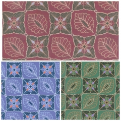
Sebagai simbol semangat masyarakat dalam mengabdi dan mempertahankan negara, bangsa, dan kesejahteraan masyarakat Bantul.
Batik Kawung
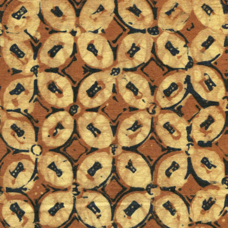
Memiliki makna kesucian, kemurnian, dan kesempurnaan. Memiliki simbol kosongnya nafsu maupun hasrat duniawi yang berkaitan dengan kata suwung. Kekosongan itu menyebabkan seseorang menjadi netral dan dapat mengendalikan diri dengan sempurna.
Batik Truntum
Sebagai perlambang ketulusan cinta tanpa syarat, abadi, dan tumaruntum (semakin lian kian subur berkembang).
Batik Parangkusumo
Motif ini bermakna jika suatu kehidupan harus didasari dengan perjuangan untuk mencapai kebahagiaan lahir dan batin, ibarat keharuman kusuma (bunga). Manusia harus mematuhi aturan hidup bermasyarakat dan taat kepada perintah Tuhan Yang Maha Esa.
Batik Ciptoning
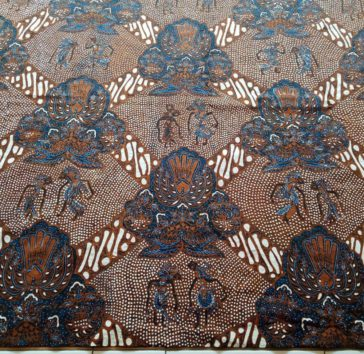
Motif ini biasanya digunakan oleh seseorang yang dituakan atau pemimpin, diharapkan menjadi orang yang bijak dan mampu memberikan petunjuk jalan yang benar kepada orang lain yang dipimpinnya. Juga agar setiap orang mampu menempatkan dirinya sendiri di tengah masyarakat.
Tari Tradisional
Yogyakarta memiliki berbagai tari tradisional seperti Tari Serimpi, Tari Kumbang, dan Tari Golek Ayun-Ayun.
Tari Serimpi

Tarian ini memiliki ciri khas adanya gerakan yang indah, lembut, dan lemah gemulai seakan-akan menggambarkan karakteristik perempuan yang santun.
Kata “serimpi” berasal dari bahasa jawa yakni “impi” yang berarti “mimpi”. Banyak yang beranggapan bahwa saat tari tersebut disaksikan, penontonnya seperti akan berada di alam mimpi, ditambah lagi irama gamelan pengiringnya dimainkan dengan lembut.
Tari Kumbang
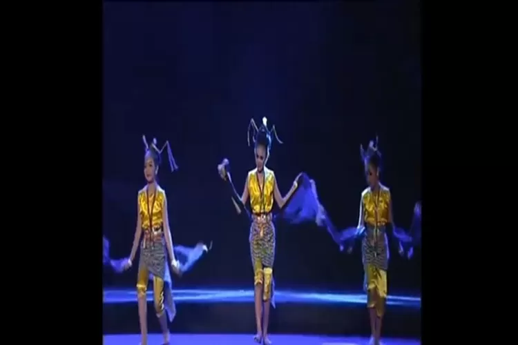
Tari Kumbang khas Jogja menceritakan sepasang kumbang jantan dan betina yang saling mengejar dan beterbangan layaknya kekasih. Kumbang jantan dan betina saling menunjukkan rasa sayang diiringi suara yang romantis. Para penonton akan diajak berimajinasi dengan suasana yang ditampilkan layaknya kisah percintaan antara kumbang jantan dan betina.
Tari Golek Ayun-Ayun
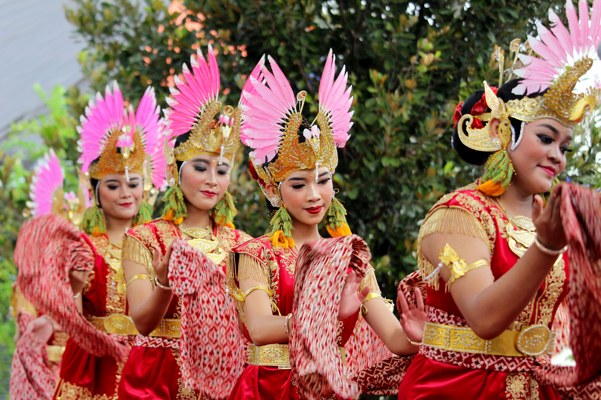
Tarian ini mengandung arti pencarian jati diri seorang gadis yang digambarkan dalam gerak muryani busana. Penggambaran ini seperti meniru orang yang sedang mengenakan busana dilengkapi perhiasan dan berhias diri.
Tari Langen Asmoro
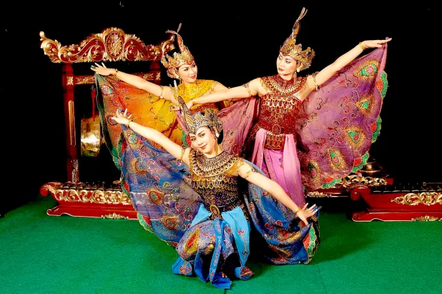
Tarian tradisional Yogyakarta ini menceritakan tentang percintaan. Tarian yang berkisah tentang sepasang kekasih yang saling menyayangi dan bermesraan. Demi menggambarkan cerita dalam tarian ini, maka tarian ini harus ditarikan secara berpasangan. Tari Langen Asmoro ditampilkan pada acara pernikahan. Hal ini dimaksudkan untuk menjadi contoh kepada para pengantin agar selalu bahagia.
Tari Satrio Watang
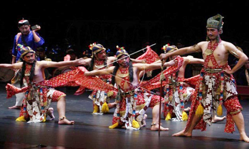
Tarian ini menceritakan tentang kegagahan prajurit zaman dulu yang pandai menggunakan senjata. Sesuai dengan namanya, Satrio yang berarti prajurit dan Watang yang berarti tongkat, tarian ini menggunakan tongkat sebagai ciri khas dalam pentas. Dalam pertunjukannya, Tari Satrio Watang ditarikan oleh laki-laki gagah dan ditarikan secara kelompok maupun tunggal.
Makanan Khas
Gudeg
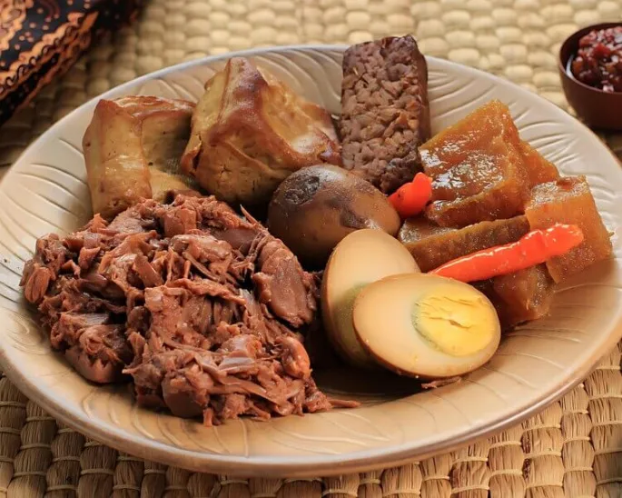
Gudeg adalah hidangan khas Daerah Istimewa Yogyakarta yang terbuat dari nangka muda yang dimasak dengan santan. Perlu waktu berjam-jam untuk membuat hidangan gudeg. Warna cokelat biasanya dihasilkan oleh daun jati yang dimasak bersamaan.
Wedang Ronde

Di beberapa kawasan di Indonesia, termasuk di Yogyakarta sering dijumpai minuman khas, yaitu ronde. Masyarakat biasa menyebutnya wedang ronde. Dalam bahasa Jawa, wedang berarti minuman. Minuman khas ini memiliki fungsi sebagai penghangat tubuh karena salah satu bahan bakunya adalah jahe.
Tiwul
Tiwul termasuk makanan tradisional jogja dan terbuat dari tepung gaplek atau singkong. Dikenal sebagai makanan yang kaya serat dan rendah kalori, biasanya disajikan dengan gula merah atau santan sebagai tambahan untuk meningkatkan cita rasa.
Bakpia Pathok
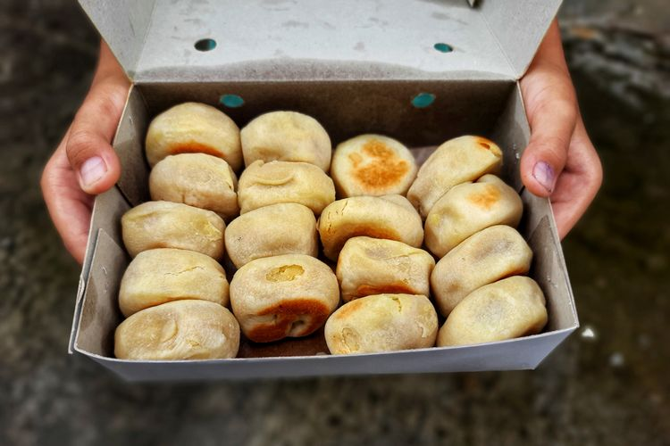
Kue manis yang terkenal dari Jogja. Kue ini berisi kacang hijau atau kacang merah sebagai isian, dibungkus dengan kulit yang tipis dan renyah. Bakpia Pathok memiliki beragam rasa seperti kacang hijau, cokelat, keju, dan lainnya.
Sate Klathak
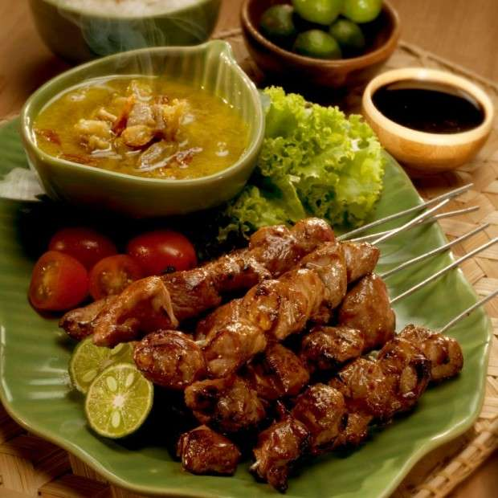
Sate Klathak adalah variasi sate yang khas dari Jogja. Daging ayam atau daging sapi ditusuk menggunakan tusuk dari batang bambu, yang memberikan aroma dan citarasa yang unik. Sate Klathak biasanya disajikan dengan bumbu kacang yang kental dan sedikit manis.
Wisata
Jogja merupakan salah satu kota destinasi wisata yang paling populer. Selain dari warga Yogyakarta yang terkenal ramah dan sopan, serta wisata kulinernya yang menggugah selera, Jogja juga menawarkan berbagai lokasi wisata yang unik dan tak kalah menarik dengan kota di Indonesia lainnya.
Wisata Jogja menawarkan begitu banyak daya tarik keindahan alam, warisan seni budaya dan bangunan-bangunan bersejarah yang bisa dinikmati.
Taman Sari

Taman Sari berarti taman yang indah. Taman ini dibangun oleh Sultan Hamengku Buwono I pada tahun 1757. Beliau menciptakan gaya arsitektur baru yang merupakan campuran gaya Jawa dan Portugis.
Dahulu Istana Air ini bukan sekedar taman yang indah namun juga digunakan untuk tempat perlindungan. Saat musuh menyerang Kraton, Sultan dan keluarganya dapat menyelamatkan diri lewat jalan bawah tanah.
Selain menikmati gedung-gedung kuno, wisatawan juga dapat mengunjungi banyak toko dan galeri seni di sepanjang gang/jalan kecil. Batik dapat ditemukan dengan mudah di toko-toko maupun galeri tersebut. Dulunya daerah ini merupakan tempat bagi para seniman Keraton.
Jalan Malioboro
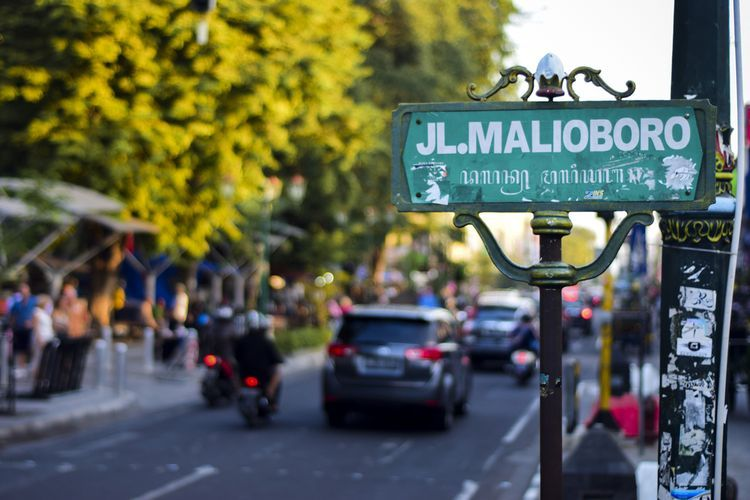
Pusat perbelanjaan dan kuliner yang sangat terkenal di Yogyakarta. Di sini, pengunjung dapat berbelanja berbagai oleh-oleh khas Yogyakarta, seperti batik, kerajinan tangan, dan mencicipi makanan lokal di warung-warung kaki lima.
Serta terkenal sebagai tempat berkumpulnya para seniman yang sering mengekpresikan kemampuan mereka seperti bermain musik, melukis, hapening art, pantomim, dan lain-lain di sepanjang jalan ini.
Benteng Vredeburg
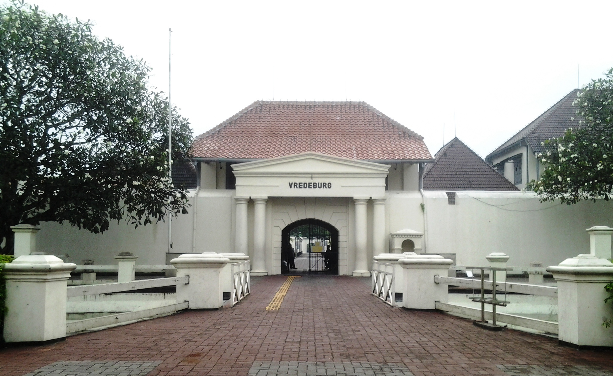
Jika melintasi jalan Malioboro, disepanjang jalan tersebut sampai titik nol kilometer tidak hanya berdiri bangunan pertokoan melainkan pula bangunan peninggalan masa kolonial, salah satunya Benteng Vredeburg. Benteng Vredeburg adalah benteng peninggalan Belanda yang kini berfungsi sebagai museum. Benteng ini menyimpan banyak informasi tentang sejarah perjuangan Indonesia, terutama terkait dengan perlawanan terhadap penjajahan Belanda.